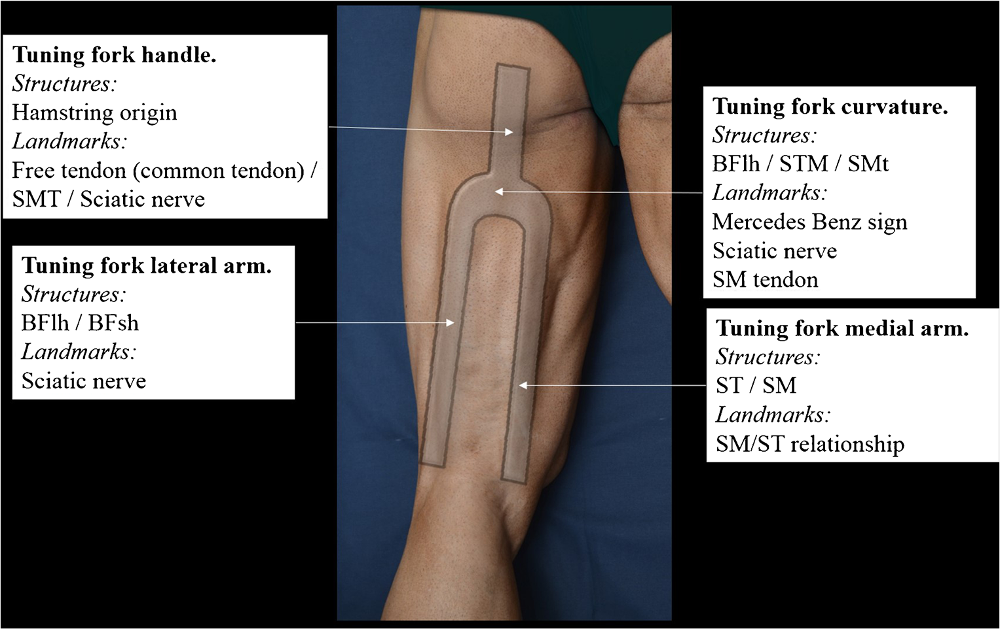
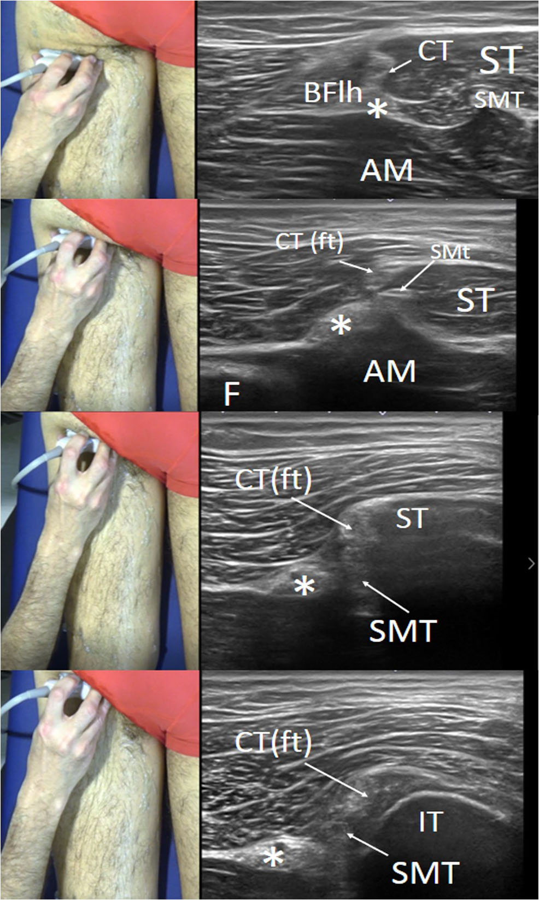

Respuesta clínica corta
¿Cómo recorrer los isquiotibiales de forma ordenada con ecografía?
Como un diapasón invertido: origen proximal, curvatura, brazo medial para semitendinoso-semimembranoso y brazo lateral para bíceps femoral.
Dato clave4 regiones · eje corto · nervio ciático y tendones como referencias
El modelo de diapasón invertido organiza la exploración de los isquiotibiales en cuatro regiones y aporta referencias útiles para no perderse anatómicamente, pero no ha demostrado reproducibilidad, precisión diagnóstica ni reducción de errores.
Observado
Qué encontró y cómo interpretarlo
La propuesta divide la exploración en cuatro regiones conectadas: origen proximal, mitad proximal, mitad distal-medial y mitad distal-lateral. La metáfora del diapasón invertido reduce la carga espacial de una anatomía compleja.
Las referencias principales son la tuberosidad isquiática, los tendones común y del semimembranoso, el nervio ciático, el rafe del semitendinoso, la relación de volumen entre semitendinoso y semimembranoso y la aparición de la cabeza corta del bíceps femoral.
Los autores buscaron en PubMed trabajos publicados entre 2003 y 2018: identificaron 109 registros, 13 describían isquiotibiales y siete utilizaban ecografía. No se presenta protocolo registrado, selección por duplicado ni evaluación del riesgo de sesgo, por lo que debe considerarse una revisión narrativa.
La afirmación de que el método ofrece una visión reproducible es plausible pero no fue evaluada. No se midieron acuerdo entre evaluadores, tiempo de aprendizaje, errores de identificación ni exactitud frente a disección o resonancia.
Atlas del artículo
Imágenes para entender el procedimiento
Estas figuras proceden del artículo original y se reproducen con licencia abierta verificada. Se muestran por su utilidad anatómica o técnica, no como prueba aislada de diagnóstico o eficacia.

El diapasón invertido organiza el recorrido en origen proximal, curvatura, brazo medial y brazo lateral, cada uno con referencias anatómicas específicas.
Cómo leerlaEs un mapa de adquisición propuesto por los autores; no constituye un sistema diagnóstico validado ni garantiza identificar una lesión.
Balius R et al., figura 3 del artículo original · Fuente · Licencia CC BY.

Barrido proximal en eje corto: las imágenes relacionan la posición del transductor con tendón común, semitendinoso, tendón del semimembranoso y nervio ciático.
Cómo leerlaLas imágenes muestran sonoanatomía seleccionada; no definen por sí solas normalidad, lesión, gravedad ni pronóstico.
Balius R et al., figura 4 del artículo original · Fuente · Licencia CC BY.
Procedimiento del artículo
Recorrido ecográfico de los isquiotibiales en cuatro regiones
La propuesta utiliza una figura de diapasón invertido para mantener la orientación durante la exploración. El recorrido comienza en el origen o en la unión proximal-media y continúa por una rama medial y otra lateral, principalmente en eje corto.
- Posición
- Decúbito prono con los pies fuera del borde de la camilla
- Transductor
- Multifrecuencia de 6–10 MHz; menor frecuencia si aumenta la profundidad
- Plano principal
- Eje corto, con comprobaciones longitudinales sobre tendón o nervio
- Mapa
- Mango, curvatura, brazo medial y brazo lateral
- 01
Mango: localizar el origen proximal
Se identifica la tuberosidad isquiática por su línea hiperecogénica con sombra posterior y se desplaza el transductor distalmente para seguir el origen de los isquiotibiales.
- Referencias
- Tuberosidad isquiática, tendón común, tendón del semimembranoso y nervio ciático.
- Lectura
- El tendón común queda lateral al origen óseo y el nervio ciático se sitúa próximo; la profundidad puede dificultar la imagen.
- 02
Curvatura: ordenar la región proximal-media
En la unión entre el tercio proximal y medio se mantiene el eje corto para reconocer la relación entre masas musculares y estructuras conectivas.
- Referencias
- Nervio ciático, tendón común, tendón del semimembranoso y signo de Mercedes-Benz.
- Lectura
- El nervio separa la referencia lateral del bíceps femoral y la medial del semitendinoso; el tendón del semimembranoso discurre profundo.
- 03
Brazo medial: seguir semitendinoso y semimembranoso
Desde la región proximal-media se desplaza el transductor distal y medialmente, siempre en eje corto, siguiendo el cambio de proporción entre ambas masas musculares.
- Referencias
- Semitendinoso superficial, semimembranoso profundo, rafe del semitendinoso y músculos de la pata de ganso.
- Lectura
- Al avanzar distalmente disminuye el semitendinoso y aumenta el semimembranoso; sus concavidades no deben confundirse.
- 04
Brazo lateral: seguir el bíceps femoral
Se regresa a la región proximal-media y se sigue distalmente el trayecto del nervio ciático hacia el lado lateral hasta aparecer la cabeza corta del bíceps femoral.
- Referencias
- Nervio ciático, cabezas larga y corta del bíceps femoral, fémur y cabeza del peroné.
- Lectura
- La cabeza corta surge en el tercio medio y ayuda a diferenciar una localización proximal de otra distal.
Secuencia reconstruida a partir de las secciones de posición, áreas de estudio y técnica del artículo original. Es una guía de orientación anatómica y no sustituye formación práctica, correlación clínica ni un protocolo diagnóstico validado.
Aplicabilidad
Qué significa clínicamente
El recorrido puede utilizarse como lista de comprobación anatómica para mantener la orientación y documentar dónde se encuentra el transductor.
Empezar por una referencia estable —origen óseo o unión proximal-media— y seguir estructuras continuas ayuda a evitar saltos aleatorios entre imágenes.
La referencia del nervio ciático exige reconocerlo y mantener precauciones, especialmente si la exploración se combina con una intervención.
La identificación de una estructura debe correlacionarse con síntomas, exploración física y, cuando proceda, otras técnicas de imagen.
Límite
Qué no permite afirmar
No incluye una muestra definida ni un estudio de fiabilidad, validez diagnóstica o curva de aprendizaje.
La búsqueda bibliográfica fue limitada a PubMed y no se describe con estándares de revisión sistemática.
Las imágenes son ejemplos anatómicos seleccionados y no representan toda la variabilidad corporal o patológica.
El modelo orienta la adquisición; no permite inferir lesión, gravedad, tiempo de recuperación ni necesidad de tratamiento.
Contexto
¿Se parece a tu paciente?
- Población estudiada
- No se estudió una cohorte clínica: el artículo describe un recorrido anatómico y ecográfico de los isquiotibiales en cuatro regiones.
- Diseño
- Revisión narrativa y propuesta técnica de sonoanatomía
- Resultado evaluado
- Descripción del recorrido y de las referencias sonoanatómicas en cuatro regiones
Fuente primaria
Lee el estudio, no solo nuestro análisis
Balius R, Pedret C, Iriarte I, Sáiz R, Cerezal L. Sonographic landmarks in hamstring muscles. Skeletal Radiol. 2019;48(11):1675-1683. doi: 10.1007/s00256-019-03208-x
Responsabilidad editorial
Francisco José Extremera García
Fisioterapeuta colegiado ICPFA 4288 · Osteópata D.O.
Creador y responsable editorial de FisioLógico
- Última revisión
- Conflictos de interés
- Ninguno declarado.